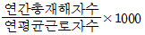
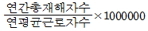
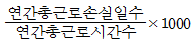
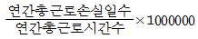
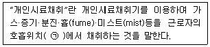
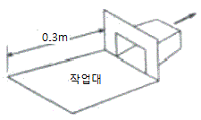

산업위생관리산업기사 (2020-08-22 기출문제)
1과목: 산업위생학 개론
1. 산업위생활동 범위인 예측, 인식, 평가, 관리 중 인식(recognition)에 대한 설명으로 옳지 않은 것은?
- 상황이 존재(설치)하는 상태에서 유해인자에 대한 문제점을 찾아내는 것이다.
- 현장조사로 정량적인 유해인자의 양을 측정하는 것으로 시료의 채취와 분석이다.
- 인식단계에서의 이러한 활동들은 사업장의 특성, 근로자의 작업특성, 유해인자의 특성에 근거한다.
- 건강에 장해를 줄 수 있는 물리적, 화학적, 생물학적, 인간공학적 유해인자 목록을 작성하고, 작업내용을 검토하고, 설치된 각종 대책과 관련된 조치들을 조사하는 활동이다.
(정답률: 55%)

2. NIOSH의 중량물 취급기준을 적용할 수 있는 작업상황이 아닌 것은?
- 작업장 내의 온도가 적절해야 한다.
- 물체를 잡을 때 불편함이 없어야 한다.
- 빠른 속도로 두 손으로 들어 올리는 작업이라야 한다.
- 물체의 폭이 75cm이하로서 두 손을 적당히 벌리고 작업할 수 있어야 한다.
(정답률: 75%)
3. 근골격계질환을 예방하기 위한 작업환경개선의 방법으로 인체측정치를 이용한 작업환경의 설계가 이루어질 때, 다음 중 가장 먼저 고려되어야 할 사항은?
- 조절가능 여부
- 최대치의 적용 여부
- 최소치의 적용 여부
- 평균치의 적용 여부
(정답률: 71%)
4. 작업대사율(RMR)이 10인 작업을 하는 근로자의 계속작업 한계시간은 약 몇 분인가?
- 0.5분
- 1.5분
- 3.0분
- 4.5분
(정답률: 39%)
5. 다음 피로의 종류 중 다음날까지 피로상태가 계속 유지되는 것은?
- 과로
- 전신피로
- 피로
- 국소피로
(정답률: 74%)
6. 접착제 등의 원료로 사용되며 피부나 호흡기에 자극을 주어 새집증후군의 주요한 원인으로 지목되고 있는 실내공기 중 오염물질은?
- 라돈
- 이산화질소
- 오존
- 포름알데히드
(정답률: 72%)
7. 근로자가 휴식 중일 때의 산소소비량(oxygenuptake)이 약0.25L/min일 경우 운동 중일 때의 산소소비량은 약 얼마까지 증가하는가? (단, 일반적인 성인 남성의 경우이며, 산소 공급이 충분하다고 가정한다.)
- 2.0L/min
- 5.0L/min
- 9.5L/min
- 15.0L/min
(정답률: 70%)
8. 산업안전보건법령상 건강진단기관이 건강진단을 실시하였을 때에는 그 결과를 고용 노동부장관이 정하는 건강진단개인표에 기록하고, 건강진단을 실시한 날로부터 며칠 이내에 근로자에게 송부하여야 하는가?
- 15일
- 30일
- 45일
- 60일
(정답률: 74%)
9. 산업안전보건법령상 사무실 공기관리 지침 중 오염물질 관리기준이 설정되지 않은 것은?
- 이산화황
- 총부유세균
- 일산화탄소
- 이산화탄소
(정답률: 61%)
10. 일하는 데 가장 적합한 환경을 지적환경(optimum working environment)이라고 한다. 이러한 지적환경을 평가하는 방법과 거리가 먼 것은?
- 신체적(physical) 방법
- 생산적(productive) 방법
- 생리적(physiological) 방법
- 정신적(psychological) 방법
(정답률: 38%)
11. 미국산업위생학술원(AAIH)은 산업위생 전문가들이 지켜야 할 윤리 강령을 채택하고 있다. 윤리강령의 4개 분류에 속하지 않는 것은?
- 전문가로서의 책임
- 근로자에 대한 책임
- 기업주와 고객에 대한 책임
- 정부와 공직사회에 대한 책임
(정답률: 78%)
12. 다음 영양소와 그 영양소의 결핍으로 인한 주된 증상의 연결로 옳지 않은 것은?
- 비타민 A - 야맹증
- 비타민 B1 - 구루병
- 비타민 B2 – 구강염, 구순염
- 비타민 K – 혈액 응고작용 지연
(정답률: 67%)
13. 산업안전보건법령상 석면해체작업장의 석면농도측정 방법으로 옳지 않은 것은? (단, 작업장은 실내이며, 석면해제·제거 작업이 모두 완료되어 작업장의 밀폐시설 등이 정상적으로 가동되는 상태이다.)
- 밀폐막이 손상되지 않고 외부로부터 작업장이 차폐되어 있음을 확인해야 한다.
- 작업이 완료되면 작업장 바닥이 젖어 있거나 물이 고여 있지 않음을 확인해야 한다.
- 작업장 내 침전된 분진이 비산(非散)될 경우 근로자에게 영향을 미치므로 비산이 되기 전 즉시 시료를 채취한다.
- 시료채취 펌프를 이용하여 멤브레인 여과지(Mixed Cellulose Ester membrane filter)로 공기 중 입자상 물질을 여과 채취한다.
(정답률: 63%)
14. 재해율 통계방법 중 강도율을 나타낸 것은?




(정답률: 63%)
15. 작업강도와 관련된 내용으로 옳지 않은 것은?
- 실동률은 95~5 × RMR로 구할 수 있다.
- 일반적으로 열량 소비량을 기준으로 평가한다.
- 작업대사율(RMR)은 작업대사량을 기초대사량으로 나눈 값이다.
- 작업대사율(RMR)은 작업강도를 에너지소비량으로 나타낸 하나의 지표이지 작업강도를 정확하게 나타냈다고는 할 수 없다.
(정답률: 58%)
16. 한국의 산업위생역사 중 연도와 활동이 잘못 연결된 것은?
- 1958년 – 석탄공사 장성병원 중앙실험실 설치
- 1962년 – 가톨릭 산업의학 연구소 설립
- 1989년 – 작업환경측정 정도관리제도 도입
- 1990년 – 한국산업위생학회 창립
(정답률: 48%)
17. 규폐증은 공기 중 분진에 어느 물질이 함유되어 있을 때 주로 발생하는가?
- 석면
- 목재
- 크롬
- 유리규산
(정답률: 57%)
18. 근로자에 있어서 약한 손(오른손잡이의 경우 왼손)의 힘은 평균 40kp(kilopond)라고 한다. 이러한 근로자가 무게 10kg인 상자를 두 손으로 들어 올릴 경우의 작업강도(%MS)는?
- 12.5
- 25
- 40
- 80
(정답률: 52%)
19. 산업안전보건법령상 작업환경측정 시 측정의 기본 시료채취방법은?
- 개인 시료채취
- 지역 시료채취
- 직독식 시료채취
- 고체 흡착 시료채취
(정답률: 70%)
20. methyl chloroform(TLV=350ppm)을 1일 12시간 작업할 때 노출기준을 Brief & Scala 방법으로 보정하면 몇 ppm으로 하여야 하는가?
- 150
- 175
- 200
- 250
(정답률: 59%)
2과목: 작업환경측정 및 평가
21. 소음계의 성능에 관한 설명으로 틀린 것은?
- 측정가능 주파수 범위는 31.5Hz~8kHz이상이어야 한다.
- 지시계기의 눈금오차는 0.5dB이내이어야 한다.
- 측정가능 소음도 범위는 10~150dB이상이어야 한다.
- 자동차 소음측정에 사용되는 것의 측정가능 소음도 범위는 45~130dB이상이어야 한다.
(정답률: 42%)
22. 직접포집방법에 사용되는 시료채취백의 특징과 거리가 먼 것은?
- 가볍고 가격이 저렴할 뿐 아니라 깨질 염려가 없다.
- 개인시료 포집도 가능하다.
- 연속시료채취가 가능하다.
- 시료채취 후 장시간 보관이 가능하다.
(정답률: 62%)
23. 근로자가 노출되는 소음의 주파수 특성을 파악하여 공학적인 소음관리대책을 세우고자 할 때 적용하는 소음계로 가장 적당한 것은?
- 보통소음계
- 적분형 소음계
- 누적소음폭로량 측정계
- 옥타브밴드분석 소음계
(정답률: 54%)
24. 다음 내용은 고용노동부 작업환경 측정 고시의 일부분이다. ㉠에 들어갈 내용은?

- 호흡기를 중심으로 반경 10cm인 반구
- 호흡기를 중심으로 반경 30cm인 반구
- 호흡기를 중심으로 반경 50cm인 반구
- 호흡기를 중심으로 반경 100cm인 반구
(정답률: 73%)
25. 시료 전처리인 회화(ashing)에 대한 설명 중 틀린 것은?
- 회화용액에 주로 사용되는 것은 염산과 질산이다.
- 회화 시 실험용기에 의한 영향은 거의 없으므로 일반 유리제품을 사용한다.
- 분석하고자 하는 금속을 제외한 나머지의 기질과 산을 제거하는 과정을 회화라 한다.
- 시료가 다상의 성분일 경우에는 여러 종류의 산을 혼합하여 사용한다.
(정답률: 57%)
26. 하루 중 80dB(A)의 소음이 발생되는 장소에서 1/3근무하고 70dB(A)의 소음이 발생하는 장소에서 2/3 근무한다고 할 때, 이 근로자의 평균소음 피폭량dB(A)은?
- 80
- 78
- 76
- 74
(정답률: 36%)
27. 아세톤, 부틸아세테이트, 메틸에틸케톤 1:2:1 혼합물의 허용농도(ppm)는? (단, 아세톤, 부틸아세테이트, 메틸에틸케톤의 TLV값은 750, 200, 200ppm이다.)
- 약 225
- 약 235
- 약 245
- 약 255
(정답률: 44%)
28. 임핀저(impinger)를 이용하여 채취할 수 있는 물질이 아닌 것은?
- 각종 금속류의 먼지
- 이소시아네이트(isocyanates)류
- 톨루엔 디아민(toluene diamine)
- 활성탄관이나 실리카겔로 흡착이 되지 않는 증기, 가스와 산
(정답률: 46%)
29. 가스상 유해물질을 검지관 방식으로 측정하는 경우 측정 시간 간격과 측정 횟수로 옳은 것은? (단, 고용노동부 고시를 기준으로 한다.)
- 측정지점에서 1일 작업시간 동안 1시간 간격으로 3회 이상 측정하여야 한다.
- 측정지점에서 1일 작업시간 동안 1시간 간격으로 4회 이상 측정하여야 한다.
- 측정지점에서 1일 작업시간 동안 1시간 간격으로 6회 이상 측정하여야 한다.
- 측정지점에서 1일 작업시간 동안 1시간 간격으로 8회 이상 측정하여야 한다.
(정답률: 54%)
30. 20mL의 1% sodium bisulfite를 담은 임핀저를 이용하여 포름알데히드가 함유된 공기 0.4m3을 채취하여 비색법으로 분석하였다. 검량선과 비교한 결과 시료용액 중 포름알데히드 농도는 40μg/mL이었다. 공기 중 포름알데히드 농도(ppm)는? (단, 25℃, 1기압기준이며, 포름알데히드의 분자량은 30g/mol이다.)
- 0.8
- 1.6
- 3.2
- 6.4
(정답률: 35%)
31. 공기 중 입자상 물질의 여과에 의한 채취원리가 아닌 것은?
- 직접차단(Direct interception)
- 관성충돌(Inertial impaction)
- 확산(Diffusion)
- 흡착(Adsorption)
(정답률: 44%)
32. 유량, 측정시간, 회수율 및 분석 등에 의한 오차가 각각 15, 3, 9, 5%일 때, 누적오차(%)는?
- 18.4
- 20.3
- 21.5
- 23.5
(정답률: 56%)
33. 여과지의 종류 중 MCE membrane Filter에 관한 내용으로 틀린 것은?
- 셀룰로오스부터 PVC, PTFE까지 다양한 원료로 제조된다.
- 시료가 여과지의 표면 또는 표면 가까운 데에 침착되므로 석면, 유리섬유 등 현미경 분석을 위한 시료채취에 이용된다.
- 입자상 물질에 대한 중량분석에 많이 사용된다.
- 입자상 물질 중의 금속을 채취하여 원자흡광광도법으로 분석하는데 적정하다.
(정답률: 42%)
34. 활성탄에 흡착된 증기(유기용제-방향족탄화수소)를 탈착시키는데 일반적으로 사용되는 용매는?
- chloroform
- methyl chloroform
- H2O
- CS2
(정답률: 61%)
35. 검지관의 장점에 대한 설명으로 틀린 것은?
- 사용이 간편하다.
- 특이도가 높다.
- 반응시간이 빠르다.
- 산업보건전문가가 아니더라도 어느 정도 숙지하면 사용할 수 있다.
(정답률: 66%)
36. 다음 중 개인용 방사선 측정기로 의료용 진단에서 가장 널리 사용되고 있는 측정기는?
- X-선 필름
- Lux meter
- 개인시료 포집장치
- 상대농도 측정계
(정답률: 64%)
37. 가스크로마토그래피(GC) 분리관의 성능은 분해능과 효율로 표시할 수 있다. 분해능을 높이려는 조작으로 틀린 것은?
- 분리관의 길이를 길게 한다.
- 이론층 해당높이를 최대로 하는 속도로 운반가스의 유속을 결정한다.
- 고체지지체의 입자 크기를 작게 한다.
- 일반적으로 저온에서 좋은 분해능을 보이므로 온도를 낮춘다.
(정답률: 30%)
38. 검출한계(LOD)에 관한 내용으로 옳은 것은?(오류 신고가 접수된 문제입니다. 반드시 정답과 해설을 확인하시기 바랍니다.)
- 표준편차의 3배에 해당
- 표준편차의 5배에 해당
- 표준편차의 10배에 해당
- 표준편차의 20배에 해당
(정답률: 47%)
39. 분석기기마다 바탕선량(background)과 구별하여 분석될 수 있는 가장 적은 분석물질의 양을 무엇이라 하는가?(오류 신고가 접수된 문제입니다. 반드시 정답과 해설을 확인하시기 바랍니다.)
- 검출한계(Limit of detection: LOD)
- 정량한계(Limit of quantization: LOQ)
- 특이성(Specificity)
- 검량선(Calibration graph)
(정답률: 45%)
40. 미국산업위생전문가협의회(ACGIH)에서 정의한 흉곽성 입자상 물질의 평균 입경(㎛)은?
- 3
- 4
- 5
- 10
(정답률: 52%)
3과목: 작업환경관리
41. 음압레벨이 80dB인 소음과 40dB인 소음과의 음압 차이는?
- 2배
- 20배
- 40배
- 100배
(정답률: 36%)
42. 자외선이 피부에 작용하는 설명으로 틀린 것은?
- 1000~2800Å의 자외선에 노출 시 홍반현상 및 즉시 색소침착 발생
- 2800~3200Å의 자외선에 노출 시 피부암 발생 가능
- 자외선 조사량이 너무 많을 시 모세혈관 벽의 투과성 증가
- 자외선에 노출 시 표피의 두께 증가
(정답률: 30%)
43. 소음방지 대책으로 가장 효과적인 방법은?
- 소음원의 제거 및 억제
- 음향재료에 의한 흡음
- 장해물에 의한 차음
- 소음기 이용
(정답률: 66%)
44. 작업 중 잠시라도 초과되어서는 안 되는 농도를 나타낸 단위는?
- TLV
- TLV-TWA
- TLV-C
- TLV-STEL
(정답률: 67%)
45. 보호구 밖의 농도가 300ppm이고 보호구 안의 농도가 12ppm이었을 때 보호계수(Protection factor, PF)는?
- 200
- 100
- 50
- 25
(정답률: 53%)
46. 작업장의 조명관리에 관한 설명으로 옳지 않은 것은?
- 간접조명은 음영과 현휘로 인한 입체감과 조명효율이 높은 것이 장점이다.
- 반간접조명은 간접과 직접조명을 절충한 방법이다.
- 직접조명은 작업면의 빛의 대부분이 광원 및 반사용 삿갓에서 직접 온다.
- 직접조명은 기구의 구조에 따라 눈을 부시게 하거나 균일한 조도를 얻기 힘들다.
(정답률: 45%)
47. 정화능력이 사염화탄소의 농도 0.7%에서 50분인 방독마스크를 사염화탄소의 농도가 0.2%인 작업장에서 사용할 때 방독마스크의 사용 가능한 시간(분)은?
- 110
- 125
- 145
- 175
(정답률: 45%)
48. 음원에서 10m 떨어진 곳에서 음압수준이 89dB(A)일 때, 음원에서 20m 떨어진 곳에서의 음압수준(dB(A))은? (단, 점음원이고 장해물이 없는 자유공간에서 구면상으로 전파한다고 가정한다.)
- 77
- 80
- 83
- 86
(정답률: 41%)
49. 수은 작업장의 작업환경관리대책으로 가장 적합하지 않은 것은?
- 수은 주입과정을 자동화시킨다.
- 수거한 수은은 물과 함께 통에 보관한다.
- 수은은 쉽게 증발하기 때문에 작업장의 온도를 80℃로 유지한다.
- 독성이 적은 대체품을 연구한다.
(정답률: 60%)
50. 금속에 장기간 노출되었을 때 발생할 수 있는 건강장애가 틀린게 연결된 것은?
- 납 - 빈혈
- 크롬 - 운동장애
- 망간 - 보행장애
- 수은 – 뇌신경세포 손상
(정답률: 55%)
51. 태양복사광선의 파장범위에 따른 구분으로 옳은 것은?
- 300nm - 적외선
- 600nm - 자외선
- 700nm - 가시광선
- 900nm – Dorno선
(정답률: 48%)
52. 장기간 사용하지 않은 오래된 우물에 들어가서 작업하는 경우 작업자가 반드시 착용해야 할 개인보호구는?
- 입자용 방진마스크
- 유기가스용 방독마스크
- 일산화탄소용 방독마스크
- 송기형 호스마스크
(정답률: 67%)
53. 자연채광에 관한 설명으로 틀린 것은?
- 창의 방향은 많은 채광을 요구하는 경우는 남향이 좋다.
- 균일한 조명을 요하는 작업실은 북창이 좋다.
- 창의 면적은 벽면적의 15~20%가 이상적이다.
- 실내각점의 개각은 4~5°, 입사각은 28°이상이 좋다.
(정답률: 51%)
54. 공기역학적 직경의 의미로 옳은 것은?
- 먼지의 면적을 2등분하는 선의 길이
- 먼지와 침강속도가 같고, 밀도가 1이며, 구형인 먼지의 직경
- 먼지의 한쪽 끝 가장자리에서 다른 쪽 끝 가장자리까지의 거리
- 먼지의 면적과 동일한 면적을 가지는 구형의 직경
(정답률: 54%)
55. 안전보건규칙상 적정공기의 물질별 농도범위로 틀린 것은?
- 산소 – 18%이상, 23.5% 미만
- 탄산가스 – 2.0% 미만
- 일산화탄소 – 30ppm 미만
- 황화수소 – 10ppm 미만
(정답률: 51%)
56. 다음 중 작업에 기인하여 전신진동을 받을 수 있는 작업자로 가장 올바른 것은?
- 병타 작업자
- 착암 작업자
- 해머 작업자
- 교통기관 승무원
(정답률: 56%)
57. 유해화학물질이 체내로 침투되어 해독되는 경우 해독반응에 가장 중요한 작용을 하는 것은?
- 적혈구
- 효소
- 림프
- 백혈구
(정답률: 56%)
58. 감압병 예방 및 치료에 관한 설명으로 옳지 않은 것은?
- 감압병의 증상이 발생하였을 경우 환자를 원래의 고압환경으로 복귀시킨다.
- 고압 환경에서 작업할 때에는 질소를 아르곤으로 대치한 공기를 호흡시키는 것이 좋다.
- 잠수 및 감압방법에 익숙한 사람을 제외하고는 1분에 10m 정도씩 잠수하는 것이 좋다.
- 감압이 끝날 무렵에 순수한 산소를 흡입시키면 예방적 효과와 감압시간을 단축시킬 수 있다.
(정답률: 52%)
59. 고압환경에서 발생할 수 있는 장해에 영향을 주는 화학물질과 가장 거리가 먼 것은?
- 산소
- 질소
- 아르곤
- 이산화탄소
(정답률: 58%)
60. 방진 마스크의 필터에 사용되는 재질과 가장 거리가 먼 것은?
- 활성탄
- 합성섬유
- 면
- 유리섬유
(정답률: 45%)
4과목: 산업환기
61. 일반적으로 외부식 후드에 플랜지를 부착하면 약 어느 정도 효율이 증가될 수 있는가? (단, 플랜지의 크기는 개구면적의 제곱근 이상으로 한다.)
- 15%
- 25%
- 35%
- 45%
(정답률: 59%)
62. 후드의 형식 분류 중 포위식 후드에 해당하는 것은?
- 슬롯형
- 캐노피형
- 건축부스형
- 그리드형
(정답률: 38%)
63. 덕트 제작 및 설치에 대한 고려사항으로 옳지 않은 것은?
- 가급적 원형 덕트를 설치한다.
- 덕트 연결부위는 가급적 용접하는 것을 피한다.
- 직경이 다른 덕트를 연결할 때에는 경사 30° 이내의 테이퍼를 부착한다.
- 수분이 응축될 경우 덕트 내로 들어가지 않도록 경사나 배수구를 마련한다.
(정답률: 60%)
64. 환기 시스템 자체 검사 시에 필요한 측정기로서 공기의 유속 측정과 관련이 없는 장비는?
- 피토관
- 열선풍속계
- 스모크 테스터
- 흑구건구온도계
(정답률: 58%)
65. 그림과 같이 작업대 위의 용접 흄을 제거하기 위해 작업면 위에 플랜지가 붙은 외부식 후드를 설치했다. 개구면에서 포착점까지의 거리는 0.3m, 제어속도는 0.5m/s, 후드개구의 면적이 0.6m2일 때 Della Valle식을 이용한 필요 송풍량(m3/min)은 약 얼마인가? (단, 후드개구의 폭/높이는 0.2보다 크다.)

- 18
- 23
- 32
- 45
(정답률: 33%)
66. 0℃, 1기압에서 공기의 비중량은 1.293kgf/m3이다. 65℃의 공기가 송풍관 내를 15m/s의 유속으로 흐를 때, 속도압은 약 몇 mmH2O인가?
- 20
- 16
- 12
- 18
(정답률: 22%)
67. 메탈에틸케톤이 5L/h로 발산되는 작업장에 대해 전체환기를 시키고자 할 경우 필요 환기량(m3/min)은? (단, 메틸에틸케톤 분자량은 72.06, 비중은 0.8⑤, 21℃, 1기압 기준, 안전계수는 2, TLV는 200ppm이다.)
- 224
- 244
- 264
- 284
(정답률: 22%)
68. 20℃, 1기압에서의 유체의 점성계수는 1.8×10-5kg/sec·m이고, 공기밀도는 1.2kg/m3, 유속은 1.0m/sec이며, 덕트 직경이 0.5m일 경우의 레이놀즈 수는?
- 1.27×105
- 1.79×105
- 2.78×104
- 3.33×104
(정답률: 28%)
69. 다음 중 전체환기방식을 적용 하기에 적절하지 못한 것은?
- 목재분진
- 톨루엔 증기
- 이산화탄소
- 아세톤 증기
(정답률: 51%)
70. 산업안전보건법령에서 규정한 관리대상 유해물질 관련 물질의 상태 및 국소배기장치 후드의 형식에 따른 제어풍속으로 옳지 않은 것은?(오류 신고가 접수된 문제입니다. 반드시 정답과 해설을 확인하시기 바랍니다.)
- 외부식 상방흡인형(가스상) : 1.0m/s
- 외부식 측방흡인형(가스상) : 0.5m/s
- 외부식 상방흡인형(입자상) : 1.0m/s
- 외부식 측방흡인형(임자상) : 1.0m/s
(정답률: 42%)
71. 송풍기 설계 시 주의사항으로 옳지 않은 것은?
- 송풍관의 중량을 송풍기에 가중시키지 않는다.
- 송풍기의 덕트 연결부위는 송풍기와 덕트가 같이 진동할 수 있도록 직접 연결한다.
- 배기가스의 입자의 종류와 농도 등을 고려하여 송풍기의 형식과 내마모 구조를 고려한다.
- 송풍량과 송풍압력을 만족시켜 예상되는 풍량의 변동 범위 내에서 과부하하지 않고 운전이 되도록 한다.
(정답률: 55%)
72. 흡인유량을 320m3/min에서 200m3/min으로 감소시킬 경우 소요 동력은 몇 %감소하는가?
- 14.4
- 18.4
- 20.4
- 24.4
(정답률: 16%)
73. 압력에 관한 설명으로 옳지 않은 것은?
- 정압이 대기압보다 작은 경우도 있다.
- 정압과 속도압의 합은 전압이라고 한다.
- 속도압은 공기흐름으로 인하여 (-)압력이 발생한다.
- 정압은 속도압과 관계없이 독립적으로 발생한다.
(정답률: 48%)
74. 습한 날 분진, 철 분진, 주물사, 요업재료 등과 같이 일반적으로 무겁고 습한 분진의 반응속도(m/s)로 옳은 것은?
- 5~10
- 15
- 20
- 25이상
(정답률: 42%)
75. 대기압이 760mmHg이고, 기온이 25℃에서 톨루엔의 증기압은 약 30mmHg이다. 이때 포화증기 농도는 약 몇 ppm인가?
- 10000
- 20000
- 30000
- 40000
(정답률: 36%)
76. 흡착법에서 사용하는 흡착제 중 일반적으로 사용되고 있으며, 비극성의 유기용제를 제거하는데 유용한 것은?
- 활성탄
- 실리카겔
- 활성알루미나
- 합성제올라이트
(정답률: 56%)
77. 국소배기장치의 배기덕트 내 공기에 의한 마찰손실과 관련이 없는 것은?
- 공기조성
- 공기속도
- 덕트직경
- 덕트길이
(정답률: 57%)
78. 국소배기 장치의 설계 시 후드의 성능을 유지하기 위한 방법이 아닌 것은?
- 제어속도를 유지한다.
- 주위의 방해기류를 제어한다.
- 후드의 개구면적을 최소화한다.
- 가급적 배출오염원과 멀리 설치한다.
(정답률: 57%)
79. 스크러버(scrubber)라고도 불리며 분진 및 가스함유 공기를 물과 접촉시킴으로써 오염물질을 제거하는 방법의 공기정화장치는?
- 세정 집진장치
- 전기 집진장치
- 여포 집진장치
- 원심력 집진장치
(정답률: 51%)
80. 환기시설을 효율적으로 운영하기 위해서는 공기공급 시스템이 필요한데 그 이유로 적절하지 않은 것은?
- 연료를 절약하기 위해서
- 작업장의 교차기류를 활용하기 위해서
- 근로자에게 영향을 미치는 냉각기류를 제거하기 위해서
- 실외공기가 정화되지 않은 채 건물 내로 유입되는 것을 막기 위해서
(정답률: 38%)